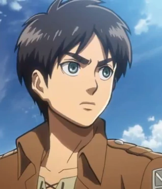
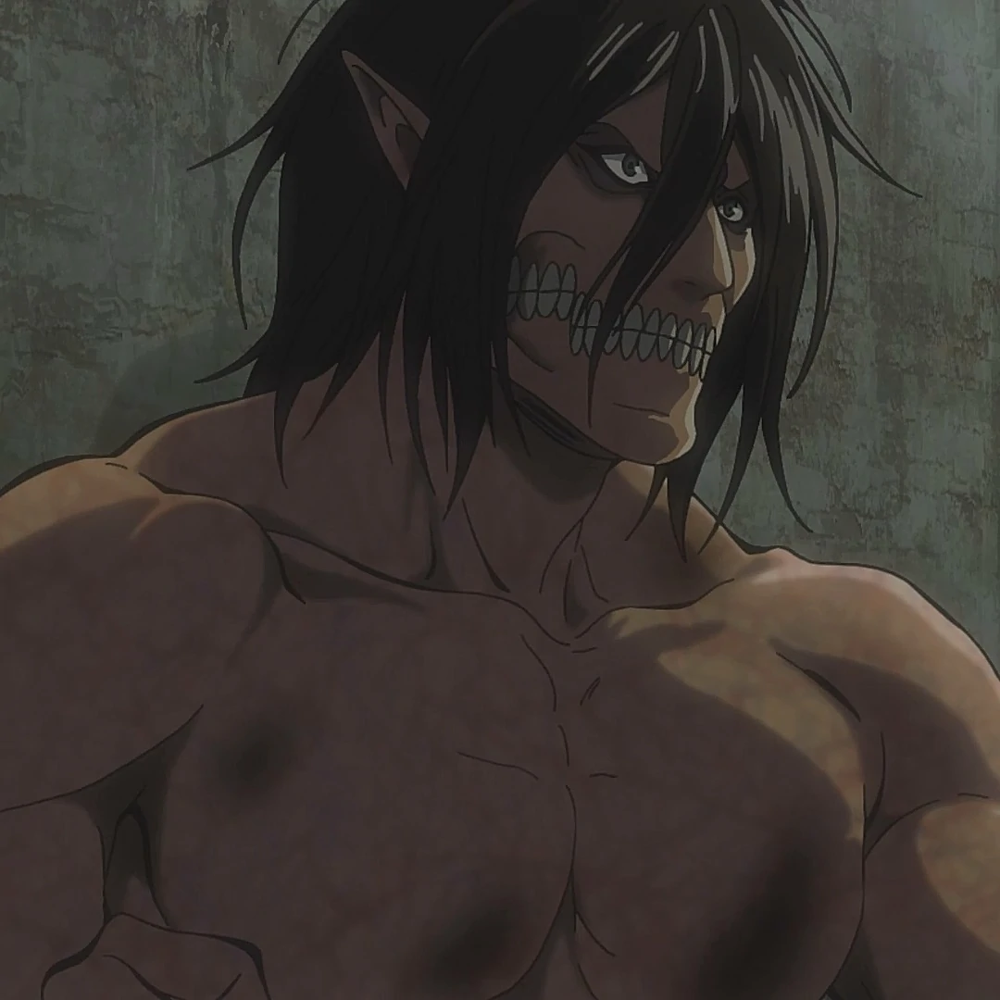
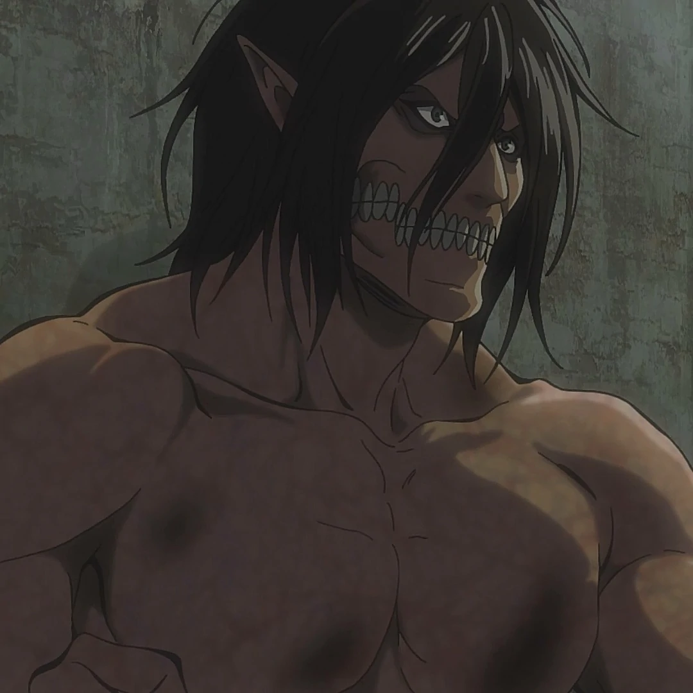

Eren Jeager
Eren Jeger je bio bivši član Izviđačkog korpusa. Bio je glavni protagonista
Napada titana. Živeo je u okrugu Šiganšina sa roditeljima sve do pada zida Marije,
gde je impotentno video kako mu je majku pojeo Titan. Ovaj događaj bi doveo do Erenove
intenzivne mržnje prema Titanima dok se zakleo da će ih sve izbrisati sa lica Zemlje.

 

Lista Erenovih zlocina
- Masovno ubistvo
- Genocid
- Ratni zlocini
- Terorizam
- Vele izdaja
- Zloupotreba vlasti
- Zloupotreba moci
- Napad i ucena
- Uzurpacija
- Kidnapovanje
- Sakacenje
- Dezertacija
- Zlocini protiv mira
- Pobuna
- Pravljenje nemira
- Okrutnost prema zivotinjama
- Kanibalizam
- Psiholosko nasilje
- Zavere
- Ispiranje mozga
- Zlocini protiv covecanstva
Index
Ocemu se radi?
O meni